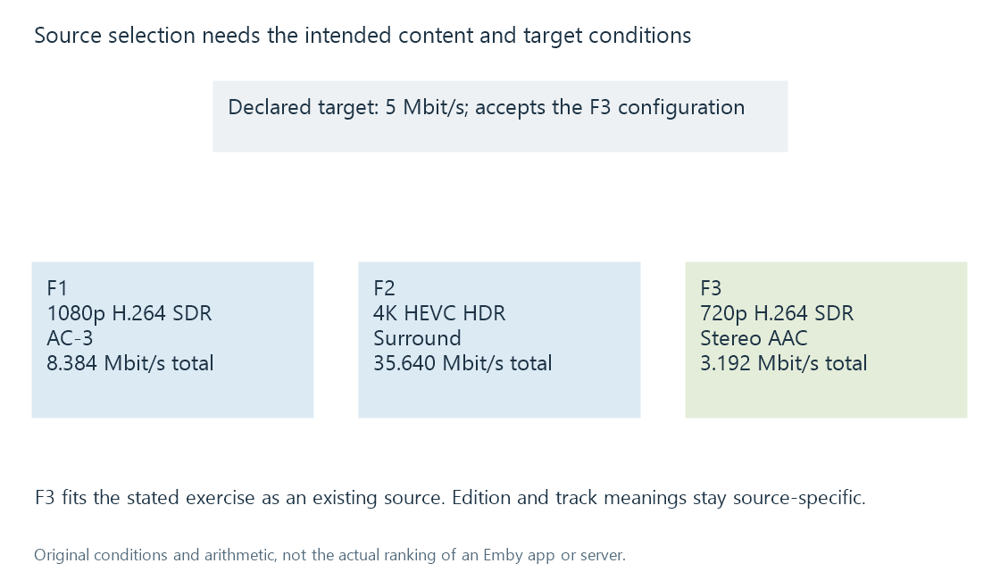

Media source selection for playback
Media source selection chooses a playable representation by evaluating edition identity, source properties, client conditions and session preferences.
A movie item can offer several playable sources. Selecting one defines the actual streams and timeline for the session. It is a different decision from selecting the catalogue title.
The useful source depends on what the viewer intends to watch and what the playback path can handle.
Three sources, one fictional cut
Assume these sources represent the same 108-minute cut:
| Source | Video | Audio | Nominal total rate |
|---|---|---|---|
| F1 | 1080p H.264 SDR, 8 Mbit/s | AC-3, 384 kbit/s | 8.384 Mbit/s |
| F2 | 4K HEVC HDR, 35 Mbit/s | Surround audio, 640 kbit/s | 35.640 Mbit/s |
| F3 | 720p H.264 SDR, 3 Mbit/s | Stereo AAC, 192 kbit/s | 3.192 Mbit/s |
Now assume an invented target path accepts F3's configuration and has a 5 Mbit/s limit. F3 is an existing representation that fits those assumptions. F1 would need another plan to reduce the rate; F2 adds other video/output requirements.

This does not establish Emby's actual ranking or the best source for every device. It demonstrates why “highest resolution” is not a complete selection rule.
First preserve the intended content
Two sources under one movie description may be different editions. A director's cut and a theatrical cut should not be treated as interchangeable merely because one uses an easier codec.
The viewer's intended edition or presentation comes before a technical preference in an identity-conscious model. Once the intended content is established, its available representations can be evaluated.
A remembered resume position also needs the relevant timeline. Selecting an extended cut cannot recover a scene correspondence from the shared movie ID alone.
Then compare the complete representation
Container, video parameters, colour presentation, audio choices and subtitles all contribute. A compatible video track can still have another selected stream that needs conversion.
The public Emby media-source model retains source-specific identifiers, stream information and delivery possibilities. Playback requests can also specify a media-source identity. Those fields let a session refer to a representation rather than only to the movie item.
Available possibilities are not a guarantee that every request will succeed. Current access, selected tracks and client conditions still participate in the observed session.
Track choices belong to that source
F1 could have French audio at index 2 while F3 has a commentary at index 2. Moving the integer without checking the target source would select the wrong content.
Likewise, chapter positions and subtitle timing can differ between sources. A change of source requires interpreting the destination representation's information.
See Also
- Alternate media versions
- Movie editions and cuts
- What determines playback compatibility?
- Client playback capabilities
- Track selection and playback plans